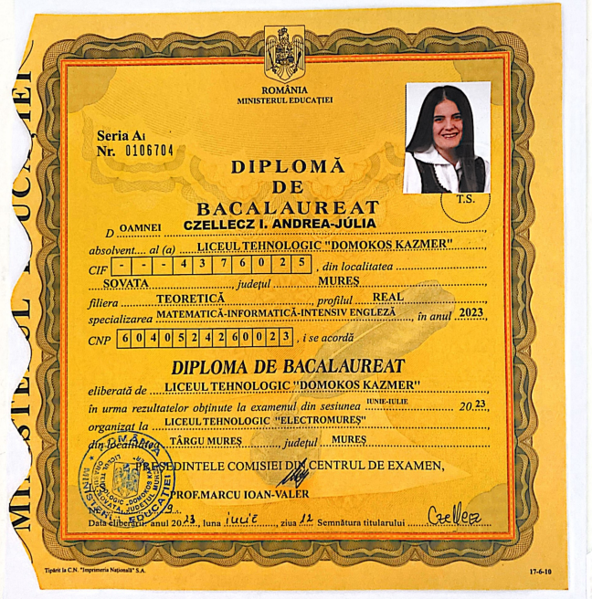
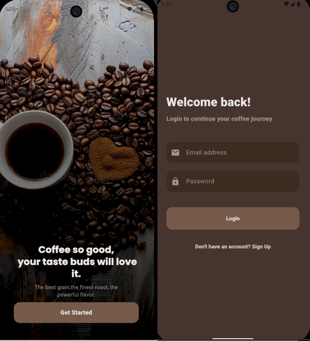
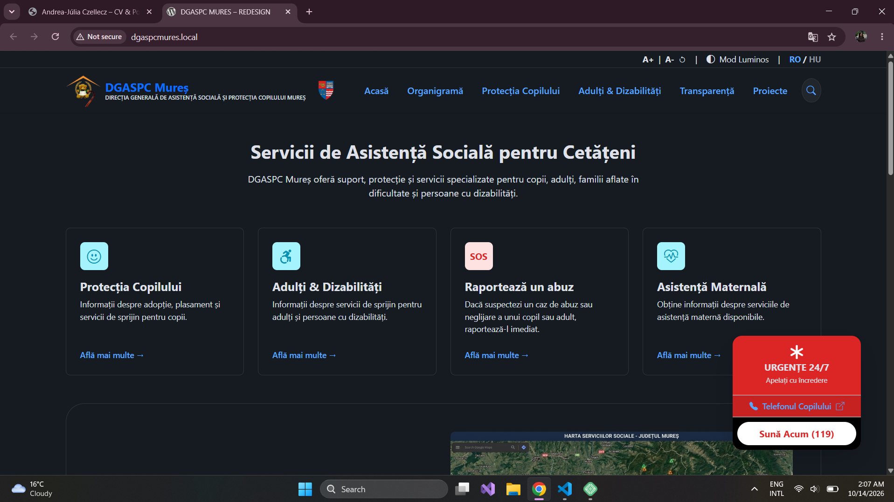

Summary Rezumat Összefoglaló
I am a motivated student at the Faculty of Engineering and Information Technology (Petru-Maior, UMFST) with a strong passion for cybersecurity and mobile application development. Although a fresh entry to the professional workforce, I am dedicated to applying my academic knowledge and self-taught technical skills to real-world projects. I am a proactive learner who enjoys exploring new technologies and solving complex digital problems. Sunt o studentă motivată la Facultatea de Inginerie și Tehnologia Informației (Petru-Maior, UMFST) cu o pasiune puternică pentru securitatea cibernetică și dezvoltarea aplicațiilor mobile. Deși sunt la începutul carierei profesionale, sunt dedicată aplicării cunoștințelor academice și abilităților tehnice autodidacte în proiecte reale. Sunt o persoană proactivă în învățare, care se bucură să exploreze noi tehnologii și să rezolve probleme digitale complexe. Műszaki és Informatikai Kar (Petru-Maior, UMFST) hallgatója vagyok, aki erős szenvedéllyel rendelkezik a kiberbiztonság és a mobilalkalmazás-fejlesztés iránt. Bár friss belépő vagyok a szakmai munkaerőpiacon, elkötelezett vagyok az akadémiai tudásom és az önállóan elsajátított technikai készségeim valós projektekben történő alkalmazása iránt. Proaktív tanuló vagyok, aki élvezi az új technológiák felfedezését és a komplex digitális problémák megoldását.
Professional Experience & Projects Experiență profesională & Proiecte Professzionális tapasztalat & Projektek
AWS Data Pipelines & Cloud Infrastructure Basics Bazele pipelinelor de date AWS & infrastructurii cloud AWS adatcsatornák és felhőinfrastruktúra alapjai
- Participated in a technical workshop focused on AWS Data Pipelines.
- Gained hands-on experience in building and managing scalable data workflows and cloud basics.
- Am participat la un workshop tehnic axat pe Pipelines de date AWS.
- Am dobândit experiență practică în construirea și gestionarea fluxurilor de date scalabile și a bazelor infrastructurii cloud.
- Részt vettem egy technikai workshopon, amely az AWS adatcsatornákra összpontosított.
- Gyakorlati tapasztalatot szereztem a skálázható adatfolyamatok és a felhőalapok építésében és kezelésében.
Algorithms, Data Structures & Mobile Development (UMFST) Algoritmi, Structuri de date și Dezvoltare mobilă (UMFST) Algoritmusok, Adatszerkezetek és Mobilfejlesztés (UMFST)
- Coffee Shop Mobile App: Designed cross-platform mobile app using Flutter, Dart, Firebase backend, and Provider state management. Aplicație mobilă pentru un magazin de cafea: A fost proiectată o aplicație mobilă cross-platform folosind Flutter, Dart, Firebase backend și Provider pentru gestionarea stării. Kávébolt mobilalkalmazás: Keresztplatformos mobilalkalmazást terveztek Flutter, Dart, Firebase backend és Provider állapotkezelés használatával. Coffee Shop App
- Reading Tracker Desktop App: Developed Java Swing application with core OOP principles (inheritance, encapsulation, polymorphism) and JSON persistence. Aplicație desktop pentru urmărirea lecturii: A fost dezvoltată o aplicație Java Swing cu principii OOP de bază (moștenire, încapsulare, polimorfism) și persistență JSON. Olvasáskövető asztali alkalmazás: Java Swing alkalmazást fejlesztettek alapvető OOP elvek (öröklődés, kapszulázás, polimorfizmus) és JSON perzisztencia alkalmazásával. Reading Tracker App
- Applied Git version control and collaborative clean code standards across projects. A aplicat controlul versiunilor Git și standardele de cod curat colaborativ în cadrul proiectelor. Git verziókezelést és együttműködő tiszta kód szabályokat alkalmaztam a projektek során.
WordPress, CMS, PHP & bootstrap Web Development
- Developed and maintained WordPress websites, implementing custom themes and plugins. Am dezvoltat și întreținut site-uri web WordPress, implementând teme și pluginuri personalizate. Fejlesztett és karbantartott WordPress weboldalakat, testreszabott témákat és bővítményeket alkalmazva. DGASPC Redesign
- Enhanced user experience and site performance through responsive design and optimization techniques. Am îmbunătățit experiența utilizatorului și performanța site-ului prin design responsiv și tehnici de optimizare. Megnöveltük a felhasználói élményt és a weboldal teljesítményét reagáló design és optimalizálási technikák alkalmazásával.
Education Educație Oktatás
Bachelor's Degree in Computer Science (2024 - Present) Licență în Informatică (2024 - Prezent) Alapképzés Informatika (2024 - Jelenleg)
Târgu Mureș, Romania Târgu Mureș, România Marosvásárhely, Románia
- Year: Anul: Év: 3
- Relevant courseworks: Cursuri relevante: Releváns tárgyak: Algorithms, Data Structures, Mobile/Web Application Development, Database Management, Object-Oriented Programming, Operating Systems, Software Engineering, Cybersecurity Fundamentals. Algoritmi, Structuri de Date, Dezvoltare de Aplicații Mobile/Web, Managementul Bazelor de Date, Programare Orientată pe Obiecte, Sisteme de Operare, Inginerie Software, Fundamente de Securitate Cibernetică. Algoritmusok, Adatstruktúrák, Mobil/Web Alkalmazásfejlesztés, Adatbázis-kezelés, Objektumorientált Programozás, Operációs Rendszerek, Szoftvertechnológia, Cibersikély Alapjai.
Mathematics and Informatics (2019 - 2023) Matematică și Informatică (2019 - 2023) Matematika és Informatika (2019 - 2023)
Sovata, Romania Sovata, România Sovata, Románia
- Graduation Year: Anul de absolvire: Befejezési év: 2023
- Developed a strong foundation in logic, problem-solving, and basic programming during my high school years. A dezvoltat o bază solidă în logică, rezolvarea problemelor și programarea de bază în timpul anilor de liceu. Egy erős alapozást alakított ki a logikában, a problémamegoldásban és az alapvető programozásban az iskola éveiben.
Skills Abilități Képességek
Technical Skills Abilități Tehnice Technikai Képességek
Languages Limbi Nyelvek
Credential Gallery Galerie de Certificări Képviseleti Galéria
Click on the images to view the details: Click pe imagini pentru a vedea detaliile: Kattintson a képekre a részletek megtekintéséhez:










Contact & Feedback Contact & Feedback Kapcsolat & Visszajelzés
Send a message or feedback directly through the form below: Trimite un mesaj sau un feedback direct prin formularul de mai jos: Küldjön üzenetet vagy visszajelzést közvetlenül az alábbi űrlap segítségével: